Finance 937 - Problem Set 2
Shasha Wang, Rodrigo Morales Mendoza, Pawel Bednarek
Contents
- Part I: Liquidity/Covenant Default
- a) Probability of Default Next Period
- b) Required Rate of Return of Bonds
- c) Value Function Iteration
- d) Stationary Distribution of Firms
- Part II: Method of Simulated Moments
- Part III: Optimal Default
- a) Value Function Iteration when Rb = 1.01Rf
- b) Probability of Default Next Period
- c) Required Rate of Return of Bonds
- d) Value Function Iteration given Rb = mRb(k',b',z).
Part I: Liquidity/Covenant Default
Housekeeping
clear;
close all;
Parametization.
M = 0.99; Rf = 1/M; r = 1/M-1; % interest rate for notation convenience ddelta = 0.1; aalphaK = 0.3; aalphaL = 0.6; W = 2; % wage llambda = 0.025; % proportional cost of issuing equity ttaoC=0.15; % corporate tax rate
k_grid, b_grid, a_grid, m_a_prob and a's transition probability matrix.
Nk = 20; kMin = 0.00001; kSteadyState = 1; tempK = kSteadyState^((aalphaK+aalphaL-1)/(1-aalphaL)); aMean = ((r+ddelta)/aalphaK/tempK)^(1-aalphaL)*(W/aalphaL)^aalphaL; % set a such that k_SteadyState equals how much you set it to be; % a_grid and a's transition matrix m = 3; % parameter for tauchen method Na = 3; rrho = 0.7; ssigma = 0.05; [grid_a_log,m_a_prob] = tauchen(Na,log(aMean),rrho,ssigma,m); grid_a = exp(grid_a_log)'; grid_a_minus = grid_a; aMax = max(grid_a); % k_grid kMax = (aMax/ddelta)^(1/(1-aalphaK)); kMax = min(2*kSteadyState, kMax); % Tighten the grid grid_k = curvspace(kMin,kMax,Nk,2)'; % I use curved grid to enhance accuracy % b_grid grid for bond % b_grid should be finer to see the difference in default probability under different productivity shocks at steady state Nb = 15; grid_b = curvspace(0,kMax,Nb,2)'; % To cover up as wide leverage level as possible % invariant distribution of a_grid - vDistribution_a0 vDistribution_a0=( 1/Na )*ones(Na,1); % initial guess vDistribution_a=vDistribution_a0; distance=100; tolerance=0.00001; iteration = 0; while distance>tolerance distribution = vDistribution_a'*m_a_prob; distance=sum(abs(distribution-vDistribution_a')); vDistribution_a = distribution'; iteration = iteration+1; end clear vDistribution_a0 distribution;
a) Probability of Default Next Period
Compute and plot the probability of default next period, conditional on the value of the shocks today p(z,b',k').
Also, rewrite profit = a^(1/(1-aalphaL)) * (k.^aalphaK .* (aalphaL * k.^aalphaK / W).^(aalphaL/(1-aalphaL)) - W * (aalphaL * k.^aalphaK/W).^(1/(1-aalphaL))); once we plug in the FOC for labor.
mCutOffValue = zeros(Nk,Nb); mDefaultProbability = zeros(Nk,Nb,Na); vDenominator = grid_k.^aalphaK .* (aalphaL * grid_k.^aalphaK / W).^(aalphaL/(1-aalphaL)) - W * (aalphaL * grid_k.^aalphaK/W).^(1/(1-aalphaL)); for ib = 1:Nb vNumerator = (grid_b(ib) - (1-ddelta)*grid_k)/(1-ttaoC); % vCutOffValue = (vNumerator ./v_Denominator).^(1-aalphaL); % I droped % this line because it generates complex numbers vCutOffValue = vNumerator ./vDenominator; mCutOffValue(:,ib) = vCutOffValue; % cutoff value^(1-aalphaL) is cutoff productivity, but I don't use productivity per se in order to avoid complex numbers for ia = 1:Na for ik = 1:Nk temp= (vCutOffValue(ik) > grid_a.^(1/(1-aalphaL))); mDefaultProbability(ik,ib,ia) = sum(temp.* m_a_prob(ia,:)'); end end end % plot the 3D matrix layer by layer figure(1); [bb,kk]=meshgrid(grid_b, grid_k); mesh(bb, kk, mDefaultProbability(:,:,1)); for ia = 2:Na hold on; mesh(bb, kk, mDefaultProbability(:,:,ia)); end title('Next Period Default Probability') ylabel('Next Period Capital Stock $k^\prime$','interpreter','latex') xlabel('Next Period Debt $b^\prime$','interpreter','latex') zlabel('Next Period Default Probability','interpreter','latex') zlim([0,1]) savefig('q1a_default_prob_3D') % plot a 2D default risk graph in steady state k=1 % we cannot tell from the graph differences among different productivity % situations figure(2) [v,ind] = max(-abs(grid_k - kSteadyState)); plot(grid_b,mDefaultProbability(ind,:,1)); for ia=2:Na hold on plot(grid_b,mDefaultProbability(ind,:,ia)); end ylim([0,1]); legend('low productivity','median productivity','high productivity','Location','southeast') title('Default Probability at Steady State $p(z,k^\prime,b^\prime)$','interpreter','latex') xlabel('Next Period Debt $b^\prime$','interpreter','latex') ylabel('Next Period Default Probability','interpreter','latex') savefig('q1a_default_prob_2D')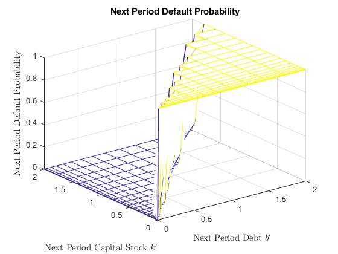 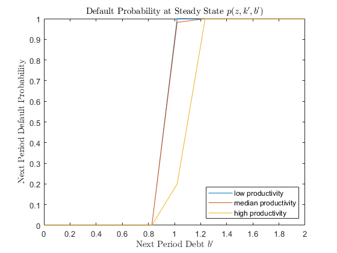
b) Required Rate of Return of Bonds
Use the conditional default probability to compute the required rate of return by bondholders, Rb(b'; k'; z) that ensures they make 0 profits. Assume for simplicity bondholders get paid 0 upon default.
mRf = Rf*ones(Nk,Nb,Na); mCarryOnProbability = 1-mDefaultProbability; mIsDefaultNextPeriod = (mDefaultProbability==1); mRb = min(Rf/mCarryOnProbability,1000000);
Functions We create some functions for future convenience.
profitFunction = @(a,k)a.* k.^aalphaK.* ((k.^aalphaK * aalphaL).* a/W).^(aalphaL/(1-aalphaL)) - W * ((k.^aalphaK * aalphaL).* a/W).^(1/(1-aalphaL)); nonDefaultFunction = @ (profit,k,bond)((1-ttaoC)*profit + (1-ddelta)*k > bond); isDefaultNextPeriod2DFunction = @(ia,mIsDefaultNextPeriod3D)(mIsDefaultNextPeriod3D(:,:,ia)); investmentFunction = @(k,kPrime,mIsDefaultNextPeriod)kPrime.*(1-mIsDefaultNextPeriod) - (1-ddelta)*k; %k_prime usually is k_grid taxPaymentsFunction = @(k,bond,profit,RbMinus)ttaoC * (profit - ddelta*k - bond.* (RbMinus-1).* ((1-ttaoC)*profit + (1-ddelta)*k > bond)); % note the non-default indicator dividentFunction = @(profit,investment,bond,bondPrime,RbMinus,taxPayments,mIsDefaultNextPeriod)(profit - investment ... + bondPrime.*(1-mIsDefaultNextPeriod) - RbMinus.* bond - taxPayments).*(1 + llambda * ((profit - investment ... + bondPrime.*(1-mIsDefaultNextPeriod) - RbMinus.* bond - taxPayments) < 0)); % note the indicator function for issuance cost
c) Value Function Iteration
Solve the Bellman equation for the equity holders taking as given the function for the required rate of return by bondholders, Rb
% Use multigrid method to speed up iteration kGridLength = [15]; % number of points in grid for capital kMin = 0.000001; kMax = 10 * kSteadyState; grid_b = curvspace(0,kMax,Nb,2)'; % Required matrices and vectors % Dimensionality is k,b,a,aMinus kPolicyIndex = zeros(kGridLength(1),Nb,Na,Na); kPolicy = zeros(kGridLength(1),Nb,Na,Na); bPolicyIndex = zeros(kGridLength(1),Nb,Na,Na); bPolicy = zeros(kGridLength(1),Nb,Na,Na); value = zeros(kGridLength(1),Nb,Na,Na); value0 = ones(kGridLength(1),Nb,Na,Na); % initial guess tic for i=1:length(kGridLength) grid_k = curvspace(kMin,kMax,kGridLength(i),2)'; % Since the profitFunction takes so much time, let's calculate it all % at once to retrieve later mANkByNa = repmat(grid_a',kGridLength(i),1); mKNkByNa = repmat(grid_k,1,Na); profitNkByNa = profitFunction(mANkByNa,mKNkByNa); % Nk by Na % Calculate Default Probability mCutOffValue = zeros(kGridLength(i),Nb); mDefaultProbability = zeros(kGridLength(i),Nb,Na); vDenominator = grid_k.^aalphaK .* (aalphaL * grid_k.^aalphaK / W).^(aalphaL/(1-aalphaL)) - W * (aalphaL * grid_k.^aalphaK/W).^(1/(1-aalphaL)); for ib = 1:Nb vNumerator = (grid_b(ib) - (1-ddelta)*grid_k)/(1-ttaoC); vCutOffValue = vNumerator ./vDenominator; mCutOffValue(:,ib) = vCutOffValue; % cutoff value^(1-aalphaL) is cutoff productivity, but I don't use productivity per se in order to avoid complex numbers for ia = 1:Na for ik = 1:kGridLength(1) temp= (vCutOffValue(ik) > grid_a.^(1/(1-aalphaL))); mDefaultProbability(ik,ib,ia) = sum(temp.* m_a_prob(ia,:)'); end end end mRf = Rf*ones(kGridLength(1),Nb,Na); mIsDefaultNextPeriod = (mDefaultProbability==1); mCarryOnProbability = 1-mDefaultProbability; mRb = min(Rf/mCarryOnProbability,1000000); tolerance = 0.00001; iteration = 0; distance = 100; kPrime = repmat(grid_k,1,Nb); % Nk*Nb matrix bondPrime = repmat(grid_b',kGridLength(i),1); % Nk*Nb matrix tic while distance > tolerance for ia=1:Na a = grid_a(ia); isDefaultNextPeriod = mIsDefaultNextPeriod(:,:,ia); for ik=1:kGridLength(i) k = grid_k(ik); profit = profitNkByNa(ik,ia);% scalar investment = investmentFunction(k,kPrime,isDefaultNextPeriod); % Nk*Nb matrix for iaMinus = 1:Na RbMinus = mRb(:,:,iaMinus); % Nk*Nb matrix aMinus = grid_a(iaMinus); for ib = 1:Nb bond = grid_b(ib); if (1-ttaoC)*profit + (1-ddelta)*k <= bond value (ik,ib,ia,iaMinus)=0; % You stop operating the firm and stop choosing next period k' and b' else taxPayments = taxPaymentsFunction(k,bond,profit,RbMinus); % Nk*Nb matrix divident = dividentFunction(profit,investment,bond,bondPrime,RbMinus,taxPayments,isDefaultNextPeriod); % Nk*Nb matrix valueTomorrow = zeros(kGridLength(i),Nb,Na); % k',b',a' for iaPrime = 1:Na % iterate over all possible states for tomorrow aPrime = grid_a(iaPrime); profitPrime = repmat(profitNkByNa(:,iaPrime),1,Nb);% Nk*Nb valueTomorrow(:,:,iaPrime) = value0(:,:,iaPrime,ia) * m_a_prob(ia,iaPrime) .* ((1-ttaoC)*profitPrime + (1-ddelta)*kPrime > bondPrime);% ÐèÒª¿¼ÂÇdefaultÖ®ºóvalueΪ0 end valueTomorrow = sum(valueTomorrow,3); % sum by the third dimension to get a Nk*Nb matrix x = divident + M * valueTomorrow; [rows,cols]=find(x==max(max(x))); kPolicyIndex(ik,ib,ia,iaMinus) = min(rows); bPolicyIndex(ik,ib,ia,iaMinus) = min(cols); kPolicy(ik,ib,ia,iaMinus) = grid_k(min(rows)); bPolicy(ik,ib,ia,iaMinus) = grid_b(min(cols)); value(ik,ib,ia,iaMinus) = max(max(x)); end end end end end distance = sum(sum(sum(sum(abs(value(:,:,:,:)-value0(:,:,:,:)))))); value0 = value; iteration = iteration + 1; %if mod(iteration,5) == 0 % display("iteration = " + iteration + " difference = " + distance ) %end end display("iteration = " + iteration + " difference = " + distance + ". Converged") if i ~= length(kGridLength) value0 = interp1(grid_k,value,linspace(kMin, kMax, kGridLength(i+1))); value = value0; kPolicy = zeros(kGridLength(i+1),Nb,Na,Na); kPolicyIndex = zeros(kGridLength(i+1),Nb,Na,Na); bPolicy = zeros(kGridLength(i+1),Nb,Na,Na); bPolicyIndex = zeros(kGridLength(i+1),Nb,Na,Na); end end toc save('valuePrevious','value') save('resultC','value','kPolicy','bPolicy','kPolicyIndex','bPolicyIndex') figure(3); [bb,kk]=meshgrid(grid_b, grid_k); mesh(bb, kk, value(:,:,1,round((Na+1)/2)));% yesterday's productivity is mean for ia = 2:Na hold on; mesh(bb, kk, value(:,:,ia,round((Na+1)/2))); end title('Value Under Different Shocks given mean $z^{-}$','interpreter','latex') ylabel('Capital Stock $k$','interpreter','latex') xlabel('Debt $b$','interpreter','latex') zlabel('Value','interpreter','latex') savefig('q1c_value_3D') figure(4) mesh(bb, kk, kPolicy(:,:,1,round((Na+1)/2)));% yesterday's productivity is mean for ia = 2:Na hold on; mesh(bb, kk, kPolicy(:,:,ia,round((Na+1)/2))); end title('Policy $k^\prime$ Under Different Shocks given mean $z^{-}$','interpreter','latex') ylabel('Capital Stock $k$','interpreter','latex') xlabel('Debt $b$','interpreter','latex') zlabel('$k^\prime$','interpreter','latex') savefig('q1c_kPolicy_3D') figure(5) mesh(bb, kk, bPolicy(:,:,1,round((Na+1)/2)));% yesterday's productivity is mean for ia = 2:Na hold on; mesh(bb, kk, bPolicy(:,:,ia,round((Na+1)/2))); end title('Policy $b^\prime$ Under Different Shocks given mean $z^{-}$','interpreter','latex') ylabel('Capital Stock $k$','interpreter','latex') xlabel('Debt $b$','interpreter','latex') zlabel('$bond^\prime$','interpreter','latex') savefig('q1c_bPolicy_3D')
"iteration = 1487 difference = 9.9473e-06. Converged" Elapsed time is 39.263782 seconds.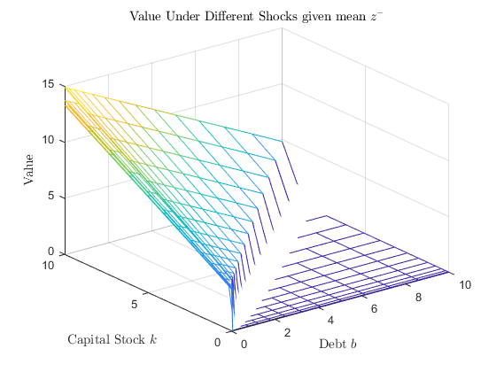 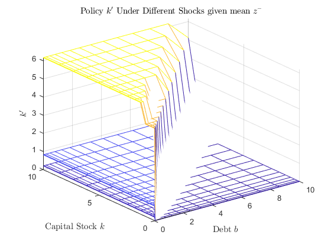 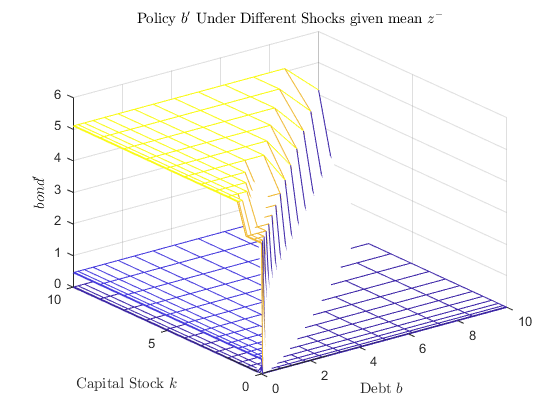
d) Stationary Distribution of Firms
Consider now a world with many such firms and no entry or exit. Specifically, suppose that upon hitting the default threshold debt claims are settled so b = 0. The restructured firm continues to operate but with capital, k = 0 and the previous productivity shock, z.
Note now the setting has changed a little bit from question c). All we have to change is the value function continuation in the bellman equation, where we don't set value of default to zero. We set if to value when k and b are 0. Notice this is the only difference from c).
1) This period, if the firm % default, instead of setting the value to 0, I set it to value at k=0.0000001 and b=0, and policy function entry is set to equal to the entry when k=0.0000001 and b=0.
2) Next Period, if the firm % default, instead of setting the valueTomorrow to 0, I set it to value at k=0.0000001 and b=0.
I use two kinds of endogenous grids to solve the problem - (a-,a,k,b) and (a,n). For the first method, we can easily make both the first and second adjustment, but for the second method where we only have today's networth information, we can only make the second adjustment and assume that today's firms are nondefaulters and the 0 networth denotes defaulters.
% Use multigrid method to speed up iteration kGridLength = [15]; % number of points in grid for capital Nk = max(kGridLength); kMin = 0.000001; kMax = 10 * kSteadyState; grid_b = curvspace(0,kMax,Nb,2)'; % Required matrices and vectors % Dimensionality is k,b,a,aMinus kPolicyIndex = zeros(kGridLength(1),Nb,Na,Na); kPolicy = zeros(kGridLength(1),Nb,Na,Na); bPolicyIndex = zeros(kGridLength(1),Nb,Na,Na); bPolicy = zeros(kGridLength(1),Nb,Na,Na); value = zeros(kGridLength(1),Nb,Na,Na); value0 = ones(kGridLength(1),Nb,Na,Na); % initial guess tic for i=1:length(kGridLength) grid_k = curvspace(kMin,kMax,kGridLength(i),2)'; % Calculate Default Probability mCutOffValue = zeros(kGridLength(i),Nb); mDefaultProbability = zeros(kGridLength(i),Nb,Na); vDenominator = grid_k.^aalphaK .* (aalphaL * grid_k.^aalphaK / W).^(aalphaL/(1-aalphaL)) - W * (aalphaL * grid_k.^aalphaK/W).^(1/(1-aalphaL)); for ib = 1:Nb vNumerator = (grid_b(ib) - (1-ddelta)*grid_k)/(1-ttaoC); vCutOffValue = vNumerator ./vDenominator; mCutOffValue(:,ib) = vCutOffValue; % cutoff value^(1-aalphaL) is cutoff productivity, but I don't use productivity per se in order to avoid complex numbers for ia = 1:Na for ik = 1:kGridLength(1) temp= (vCutOffValue(ik) > grid_a.^(1/(1-aalphaL))); mDefaultProbability(ik,ib,ia) = sum(temp.* m_a_prob(ia,:)'); end end end mRf = Rf*ones(kGridLength(1),Nb,Na); mCarryOnProbability = 1-mDefaultProbability; mIsDefaultNextPeriod = (mDefaultProbability==1); mRb = min(Rf/mCarryOnProbability,1000000); tolerance = 0.00001; iteration = 0; distance = 100; kPrime = repmat(grid_k,1,Nb); % Nk*Nb matrix bondPrime = repmat(grid_b',kGridLength(i),1); % Nk*Nb matrix tic while distance > tolerance for ia=1:Na a = grid_a(ia); isDefaultNextPeriod = mIsDefaultNextPeriod(:,:,ia); for ik=1:kGridLength(i) k = grid_k(ik); profit = profitNkByNa(ik,ia); investment = investmentFunction(k,kPrime,isDefaultNextPeriod); % Nk*Nb matrix for iaMinus = 1:Na RbMinus = mRb(:,:,iaMinus); % Nk*Nb matrix aMinus = grid_a(iaMinus); for ib = 1:Nb bond = grid_b(ib); if (1-ttaoC)*profit + (1-ddelta)*k <= bond value (ik,ib,ia,iaMinus)=value0(1,1,ia,iaMinus); kPolicyIndex(ik,ib,ia,iaMinus) = kPolicyIndex(1,1,ia,iaMinus) ; bPolicyIndex(ik,ib,ia,iaMinus) = bPolicyIndex(1,1,ia,iaMinus) ; kPolicy(ik,ib,ia,iaMinus) = grid_k(kPolicyIndex(1,1,ia,iaMinus)); bPolicy(ik,ib,ia,iaMinus) = grid_b(bPolicyIndex(1,1,ia,iaMinus)); else taxPayments = taxPaymentsFunction(k,bond,profit,RbMinus); % Nk*Nb matrix divident = dividentFunction(profit,investment,bond,bondPrime,RbMinus,taxPayments,isDefaultNextPeriod); % Nk*Nb matrix valueTomorrow = zeros(kGridLength(i),Nb,Na);% k',b',a' for iaPrime = 1:Na % iterate over all possible states for tomorrow aPrime = grid_a(iaPrime); profitPrime = repmat(profitNkByNa(:,iaPrime),1,Nb);% Nk*Nb valueTomorrow(:,:,iaPrime) = m_a_prob(ia,iaPrime) * (value0(:,:,iaPrime,ia).* ((1-ttaoC)*profitPrime + (1-ddelta)*kPrime > bondPrime)... +value0(1,1,iaPrime,ia).* ((1-ttaoC)*profitPrime + (1-ddelta)*kPrime <= bondPrime));% ÐèÒª¿¼ÂÇdefaultÖ®ºóvalue²»ÊÇΪ0£¬¶øÊÇΪset bond and capital to 0µÄvalue end mExpectedValueTomorrow = sum(valueTomorrow,3); % sum by the third dimension to get a Nk*Nb matrix x = divident + M * mExpectedValueTomorrow; [rows,cols]=find(x==max(max(x))); kPolicyIndex(ik,ib,ia,iaMinus) = min(rows); bPolicyIndex(ik,ib,ia,iaMinus) = min(cols); kPolicy(ik,ib,ia,iaMinus) = grid_k(min(rows)); bPolicy(ik,ib,ia,iaMinus) = grid_b(min(cols)); value(ik,ib,ia,iaMinus) = max(max(x)); end end end end end distance = sum(sum(sum(sum(abs(value(:,:,:,:)-value0(:,:,:,:)))))); value0 = value; iteration = iteration + 1; %if mod(iteration,5) == 0 % display("iteration = " + iteration + " difference = " + distance ) %end end display("iteration = " + iteration + " difference = " + distance + ". Converged") if i ~= length(kGridLength) value0 = interp1(grid_k,value,linspace(kMin, kMax, kGridLength(i+1))); value = value0; kPolicy = zeros(kGridLength(i+1),Nb,Na,Na); kPolicyIndex = zeros(kGridLength(i+1),Nb,Na,Na); bPolicy = zeros(kGridLength(i+1),Nb,Na,Na); bPolicyIndex = zeros(kGridLength(i+1),Nb,Na,Na); end end toc save('resultD','value','kPolicy','bPolicy','kPolicyIndex','bPolicyIndex') figure(6); [bb,kk]=meshgrid(grid_b, grid_k); mesh(bb, kk, value(:,:,1,round((Na+1)/2)));% yesterday's productivity is mean for ia = 2:Na hold on; mesh(bb, kk, value(:,:,ia,round((Na+1)/2))); end title('Value Under Different Shocks given mean $z^{-}$','interpreter','latex') ylabel('Capital Stock $k$','interpreter','latex') xlabel('Debt $b$','interpreter','latex') zlabel('Value','interpreter','latex') savefig('q1d_value_3D') figure(7) mesh(bb, kk, kPolicy(:,:,1,round((Na+1)/2)));% yesterday's productivity is mean for ia = 2:Na hold on; mesh(bb, kk, kPolicy(:,:,ia,round((Na+1)/2))); end title('Policy $k^\prime$ Under Different Shocks given mean $z^{-}$','interpreter','latex') ylabel('Capital Stock $k$','interpreter','latex') xlabel('Debt $b$','interpreter','latex') zlabel('$k^\prime$','interpreter','latex') savefig('q1d_kPolicy_3D') figure(8) mesh(bb, kk, bPolicy(:,:,1,round((Na+1)/2)));% yesterday's productivity is mean for ia = 2:Na hold on; mesh(bb, kk, bPolicy(:,:,ia,round((Na+1)/2))); end title('Policy $b^\prime$ Under Different Shocks given mean $z^{-}$','interpreter','latex') ylabel('Capital Stock $k$','interpreter','latex') xlabel('Debt $b$','interpreter','latex') zlabel('$bond^\prime$','interpreter','latex') savefig('q1d_bPolicy_3D')
"iteration = 1556 difference = 9.9201e-06. Converged" Elapsed time is 43.931917 seconds.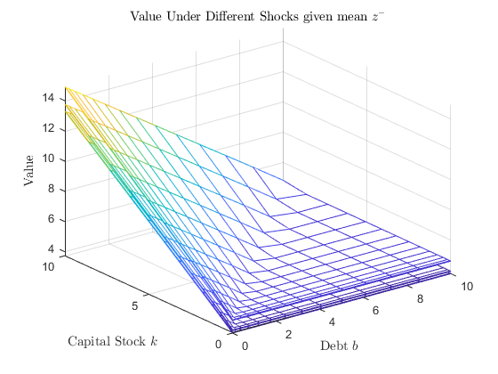 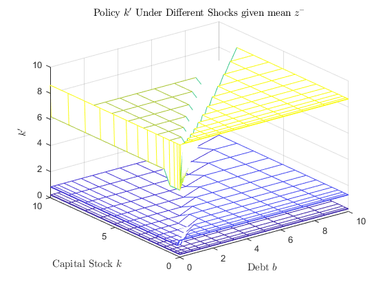 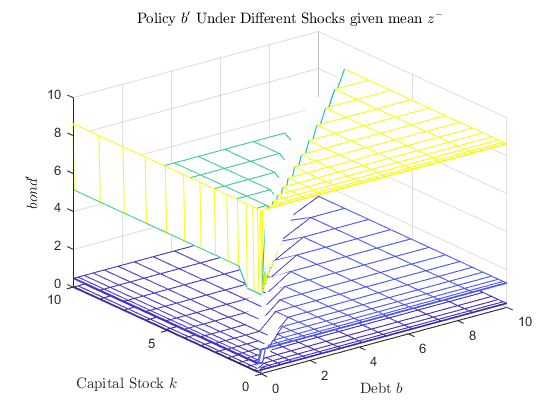
Stationary Distribution Compute the stationary distribution of firms.
distributionStationary0 = (1/(Nk*Nb*Na*Na))*ones(Nk,Nb,Na,Na); distance=100; tolerance=0.000001; iteration=0; while distance>tolerance distributionStationary1 = zeros(Nk,Nb,Na,Na); for ia=1:Na for iaMinus=1:Na for ib=1:Nb for ik=1:Nk ikPrime = kPolicyIndex(ik,ib,ia,iaMinus); ibPrime = bPolicyIndex(ik,ib,ia,iaMinus); prob = distributionStationary0(ik,ib,ia,iaMinus); for iaPrime=1:Na prob_aPrime = prob*m_a_prob(ia,iaPrime); distributionStationary1(ikPrime,ibPrime,iaPrime,ia) = distributionStationary1(ikPrime,ibPrime,iaPrime,ia) + prob_aPrime; end end end end end distance=sum(sum(sum(sum(abs(distributionStationary0-distributionStationary1))))); distributionStationary0 = distributionStationary1; iteration = iteration + 1; end
Plot the distribution
[bb,kk]=meshgrid(grid_b, grid_k); aMinusDescription = ["low","medium","high"]; for iaMinus = 1:Na figure(8+iaMinus); mesh(bb, kk, distributionStationary0(:,:,1,iaMinus)); for ia = 2:Na hold on; mesh(bb,kk,distributionStationary0(:,:,ia,iaMinus)); end title(['Distribution $z^{-}$ ',aMinusDescription(iaMinus)],'interpreter','latex'); ylabel('Capital Stock $k^\prime$','interpreter','latex') xlabel('Debt $b^\prime$','interpreter','latex') zlabel('Probability Mass','interpreter','latex') end savefig('q1d_stationary_distribution_3D')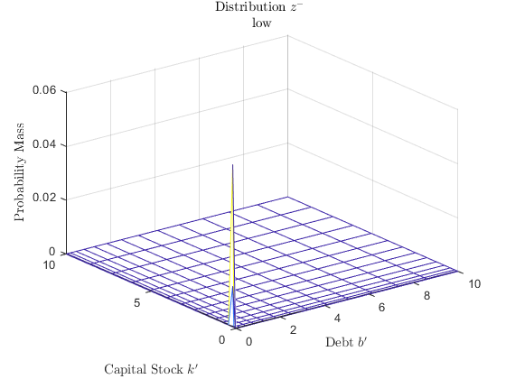 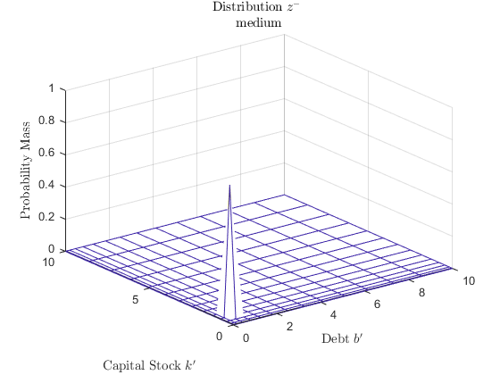 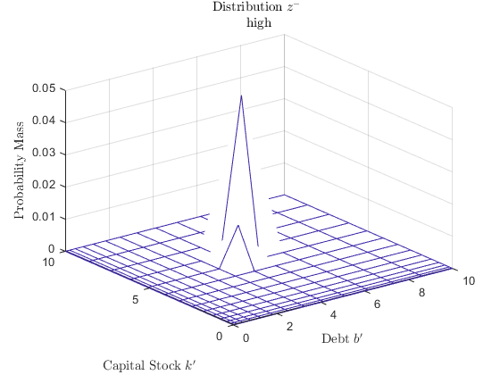
Use the invariant distribution to construct a table reporting the cross-sectional average values of:
(1) probability of default, p();
(2) required return on risky bonds, Rb();
(3) leverage ratio, b/k;
(4) investment to capital ratio, i/k.
(5) fraction of firms issuing equity;
To solve this question, we create a 4-dimensional array in order to reduce the layer of loops.
mK4D=repmat(grid_k,1,Nb,Na,Na);% Nk*Nb*Na*Na matrix mBond4D=repmat(grid_b',Nk,1,Na,Na); % Nk*Nb*Na*Na matrix mA4D=repmat(grid_a',Na,1,Nb,Nk); mA4D=permute(mA4D,[4,3,2,1]);% transform/reallocate the dimension to get a Nk*Nb*Na*Na matrix mAMinus4D=repmat(grid_a,1,Na,Nb,Nk); mAMinus4D=permute(mAMinus4D,[4,3,2,1]);% transform/reallocate the dimension to get a Nk*Nb*Na*Na matrix
(1) probability of default, p();
mProfit4D = profitFunction(mA4D,mK4D);% Nk*Nb matrix mDefault4D = 1-nonDefaultFunction(mProfit4D,mK4D,mBond4D);% Nk*Nb 0-1 matrix defaultProbability = sum(sum(sum(sum(mDefault4D.*distributionStationary0)))); fprintf('Average Default Probability is %2.10f\n', defaultProbability);
Average Default Probability is 0.0000000036
(2) required return on risky bonds, Rb();
riskyBondReturn = sum(sum(sum(sum((min(10000000000000,Rf/(1-mDefault4D))).*((mDefault4D~=1).*distributionStationary0)))));
fprintf('Required return on risky bonds on average is %2.8f\n', riskyBondReturn);
Required return on risky bonds on average is 1.01010101
As we can see, the result implies that corporate bonds are effectively riskfree.
(3) leverage ratio, b/k;
leverageRatio = sum(sum(sum(sum(mBond4D ./ mK4D .*distributionStationary0))));
fprintf('Average leverage ratio is %2.8f\n', leverageRatio);
Average leverage ratio is 0.53968518
(4) investment to capital ratio, i/k.
investment2Capital=sum(sum(sum(sum((kPolicy./mK4D + 1 - ddelta).*distributionStationary0))));
fprintf('Average investment to capital ratio is %2.8f\n', investment2Capital);
Average investment to capital ratio is 2.00309413
(5) fraction of firms issuing equity;
mIsDefaultNextPeriod4D = zeros(kGridLength(1),Nb,Na,Na); for iaMinus=1:Na aMinus = grid_a(iaMinus); mIsDefaultNextPeriod4D(:,:,:,iaMinus)=mIsDefaultNextPeriod; end mRbMinus4D = zeros(kGridLength(1),Nb,Na,Na); for ia = 1:Na a = grid_a(ia); for iaMinus = 1:Na aMinus = grid_a(iaMinus); mRbMinus4D(:,:,ia,iaMinus)=mRb(:,:,iaMinus); end end mInvestment4D = investmentFunction(mK4D,mK4D,mIsDefaultNextPeriod4D); mTaxPayments4D = taxPaymentsFunction(mK4D,mBond4D,mProfit4D,mRbMinus4D); mDivident4D = dividentFunction(mProfit4D,mInvestment4D,mBond4D,mBond4D,mRbMinus4D,mTaxPayments4D,mIsDefaultNextPeriod4D); mIsIssuingEquity = (mDivident4D<0); fractionOfFirmsIssuingEquity = sum(sum(sum(sum( mIsIssuingEquity .*distributionStationary0)))); fprintf('The fraction of firms issuing equity is %2.8f\n', fractionOfFirmsIssuingEquity); table(defaultProbability,riskyBondReturn,leverageRatio,investment2Capital,fractionOfFirmsIssuingEquity)
The fraction of firms issuing equity is 0.03029629
ans =
1×5 table
defaultProbability riskyBondReturn leverageRatio investment2Capital fractionOfFirmsIssuingEquity
__________________ _______________ _____________ __________________ ____________________________
3.5699e-09 1.0101 0.53969 2.0031 0.030296
Part II: Method of Simulated Moments
% Housekeeping. clear; close all;
Parametization.
M = 0.99; Rf = 1/M; r = 1/M-1; % interest rate for notation convenience ddelta = 0.1; aalphaK = 0.3; aalphaL = 0.6; W = 2; % wage llambda = 0.025; % proportional cost of issuing equity ttaoC=0.15; % corporate tax rate Nk = 20; kMin = 0.00001; kSteadyState = 1; % a_grid and a's transition matrix m = 3; % parameter for tauchen method Na = 5; ssigma = 0.05; Nb = 15; tolerance=0.00001;
We create a grid of rho and lambda.
kGridLength = [15]; % number of points in grid for capital numsteps = 1000; vOtherCoefs= [M ddelta aalphaK, aalphaL, W, ttaoC, Nk, kMin, kSteadyState]; vOtherCoefs= [vOtherCoefs m Na ssigma Nb tolerance]; %size 14 Vinit = ones(kGridLength(1),Nb,Na,Na); % initial guess vRhos = [0.5 0.6 0.7 0.8 0.9]; vLambdas = [ 0.01 0.02 0.025 0.03 0.05]; numRhos = length(vRhos); numLambdas = length(vLambdas); numCoefs = 9; % rho, lambda, beta0-beta2, gamma0-gamma3 coefficients = zeros(numRhos*numLambdas,numCoefs); ii = 0; j = 0; for rrho= vRhos ii = ii+1; coefficients(((ii-1)*numLambdas +1):(ii*numLambdas),1) = rrho; j = 0; for llambda = vLambdas j = j+1; coefficients((ii-1)*numLambdas+j,2) = llambda; end end
We now get the coefficients from code of 1.d) for each rho/lambda.
Here, we run the code from 1.d) with the different values of lambda and rho.
The function `funVectorCoefs` wraps the calculations of the value function and the steady state as in parts 1.c) and 1.d). Additionally, it runs a regression and saves the estimated parameters.
ii = 0; j = 0; for rrho= vRhos ii = ii+1; j = 0; for llambda = vLambdas j = j+1; [vectorCoefs, Vnew] = funVectorCoefs(rrho,llambda, Vinit,vOtherCoefs,... kGridLength,0, numsteps); %vectorCoefs = 1:7; Vinit = Vnew; coefficients((ii-1)*numLambdas+j,3:numCoefs) = vectorCoefs; end end
We now find the optimal coefficients.
%once we have the coefficients, we just see which one is the closest one to the one given betaObjective = [0.004 0.02 -0.15 -0.4 0.05]; %b1, b2, g1,g2,g3 %get rid of beta0 and gamma0 coefToCompare = coefficients(:,[4,5,7,8,9]); errors = zeros(numRhos*numLambdas,1); % find the best coefficients w.r.to the norm2 distance vs the given coefs. errors(1) = norm(coefToCompare(1,:) - betaObjective,2); minerror = errors(1); minerrorii = 1; for ii=2:(numRhos*numLambdas) errors(ii) = norm(coefToCompare(ii,:) - betaObjective,2); if errors(ii) < errors(ii-1) minerror = errors(ii); minerrorii = ii; end end display(['The best coefficients found are: rho = ', num2str(coefficients(minerrorii,1)), ' and lambda = ', num2str(coefficients(minerrorii,2))]);
The best coefficients found are: rho = 0.9 and lambda = 0.03
Part III: Optimal Default
First we need to decide on the default behavior - once default, will the firm continue to run the firm as the ownership with 0 capital and 0 bond as in question 1(d), or will its ownership be changed and thus value put to 0?
It is implied in the Bellman equation that, once default, firms exit the market, since next period we are choosing between 0 and e(z',k',b'), not between e(z',0,0) and e(z',k',b').
Housekeeping
clear;
close all;
Parametization.
M = 0.99; Rf = 1/M; RbConstant = 1.01 * Rf; r = 1/M-1; % risk free interest rate for notation convenience ddelta = 0.1; aalphaK = 0.3; aalphaL = 0.6; W = 2; % wage llambda = 0.025; % proportional cost of issuing equity ttaoC=0.15; % corporate tax rate
a_grid, m_a_prob and a's transition probability matrix
kSteadyState = 1; tempK = kSteadyState^((aalphaK+aalphaL-1)/(1-aalphaL)); aMean = ((r+ddelta)/aalphaK/tempK)^(1-aalphaL)*(W/aalphaL)^aalphaL; % set a such that k_SteadyState equals how much you set it to be; % a_grid and a's transition matrix m = 3; % parameter for tauchen method Na = 3; rrho = 0.7; ssigma = 0.05; [grid_a_log,m_a_prob] = tauchen(Na,log(aMean),rrho,ssigma,m); grid_a = exp(grid_a_log)'; % grid_a_minus = grid_a; aMax = max(grid_a); % k_grid kMax = (aMax/ddelta)^(1/(1-aalphaK)); kMax = min(2*kSteadyState, kMax); % Tighten the grid % grid_k = curvspace(kMin,kMax,Nk,2)'; % I use curved grid to enhance accuracy % b_grid grid for bond % b_grid should be finer to see the difference in default probability under different productivity shocks at steady state Nb = 20; grid_b = curvspace(0,kMax,Nb,2)'; % To cover up as wide leverage level as possible % invariant distribution of a_grid - vDistribution_a0 vDistribution_a0=( 1/Na )*ones(Na,1); % initial guess vDistribution_a=vDistribution_a0; distance=100; tolerance=0.00001; iteration = 0; while distance>tolerance distribution = vDistribution_a'*m_a_prob; distance=sum(abs(distribution-vDistribution_a')); vDistribution_a = distribution'; iteration = iteration+1; end clear vDistribution_a0 distribution;
Create functions for convenience
profitFunction = @(a,k)a.* k.^aalphaK.* ((k.^aalphaK * aalphaL).* a/W).^(aalphaL/(1-aalphaL)) - W * ((k.^aalphaK * aalphaL).* a/W).^(1/(1-aalphaL)); investmentFunction = @(k,kPrime)kPrime - (1-ddelta)*k; %k_prime usually is k_grid taxPaymentsFunction = @(k,bond,profit,RbMinus)ttaoC * (profit - ddelta*k - bond * (RbMinus-1)); % note the non-default indicator dividentFunction = @(profit,investment,bond,bondPrime,RbMinus,taxPayments,mIsDefaultNextPeriod)(profit - investment ... + bondPrime.*(1-mIsDefaultNextPeriod) - RbMinus.* bond - taxPayments).*(1 + llambda * ((profit - investment ... + bondPrime.*(1-mIsDefaultNextPeriod) - RbMinus.* bond - taxPayments) < 0)); % note the indicator function for issuance cost
a) Value Function Iteration when Rb = 1.01Rf
Solve the Bellman equation for equity. Plot the optimal investment and default decision for the equity holders.
State variables: k, b, z Control variables: k',b'
Considerations:
a) whether to default this period (using value function<0 this period to decide);
b) if next period regardless of a', value function is all less than 0, then b' can't be borrowed this much, and thus the firm had to fund the investment by equity.
% Use multigrid method to speed up iteration kGridLength = [20]; % number of points in grid for capital Nk = max(kGridLength); kMin = 0.000001; kMax = 7 * kSteadyState; bMax = 7 * kSteadyState; grid_b = curvspace(0,bMax,Nb,2)'; % Required matrices and vectors % Dimensionality is k,b,a,aMinus kPolicyIndex = zeros(kGridLength(1),Nb,Na); kPolicy = zeros(kGridLength(1),Nb,Na); bPolicyIndex = zeros(kGridLength(1),Nb,Na); bPolicy = zeros(kGridLength(1),Nb,Na); % Note default it not a % policy to make for the next period. default is a reaction in this period % once productivity shock is realized and you see whether or not the value of the firm is larger than 0 or not. mValue = zeros(kGridLength(1),Nb,Na); mValue0 = ones(kGridLength(1),Nb,Na); % initial guess tic for i=1:length(kGridLength) grid_k = curvspace(kMin,kMax,kGridLength(i),2)'; % Since the profitFunction takes so much time, let's calculate it all % at once to retrieve later mANkByNa = repmat(grid_a',kGridLength(i),1); mKNkByNa = repmat(grid_k,1,Na); profitNkByNa = profitFunction(mANkByNa,mKNkByNa); % Nk by Na tolerance = 0.00001; iteration = 0; distance = 100; kPrimeNkByNb = repmat(grid_k,1,Nb); % Nk*Nb matrix bondPrimeNkByNb = repmat(grid_b',kGridLength(i),1); % Nk*Nb matrix tic while distance > tolerance mIsDefaultNextPeriod = zeros(kGridLength(i),Nb); % k' b' entry is 1 if it will default for sure next period for ibPrime = 1:Nb for ikPrime = 1:kGridLength(i) mIsDefaultNextPeriod(ikPrime,ibPrime) = (sum((mValue0(ikPrime,ibPrime,:)>=0)) == 0); end end for ia=1:Na a = grid_a(ia); for ik=1:kGridLength(i) k = grid_k(ik); profit = profitNkByNa(ik,ia);% scalar investmentNkByNb = investmentFunction(k,kPrimeNkByNb); % Nk*Nb matrix for ib = 1:Nb bond = grid_b(ib); if mValue0(ik,ib,ia) <0 % the firm will exit/default and choose no k' and b' kPolicyIndex(ik,ib,ia) = 0; kPolicy(ik,ib,ia) = 0; bPolicyIndex(ik,ib,ia) = 0; bPolicy(ik,ib,ia) = 0; else % choose policy amongst k's b's taxPayments = taxPaymentsFunction(k,bond,profit,RbConstant); % scalar divident = dividentFunction(profit,investmentNkByNb,bond,bondPrimeNkByNb,RbConstant,taxPayments,mIsDefaultNextPeriod);% Nk*Nb matrix % Next we shall calculate the expected value % tomorrow. Note we have to apply Max operator % first and then take expectations - which means % only when we reach that period will the firm make % the default/nondefault decision. mValueTomorrow = zeros(kGridLength(i),Nb,Na); % k',b',a' for iaPrime = 1:Na % iterate over all possible states for tomorrow mValueTomorrow(:,:,iaPrime) = m_a_prob(ia,iaPrime) * ... (max(0,mValue0(:,:,iaPrime)).*(1-mIsDefaultNextPeriod)... + max(0,repmat(mValue0(:,1,iaPrime),1,Nb)).*mIsDefaultNextPeriod); end mExpectedValueTomorrow = sum(mValueTomorrow,3); % sum by the third dimension to get a Nk*Nb matrix x = divident + M * mExpectedValueTomorrow; [rows,cols]=find(x==max(max(x))); kPolicyIndex(ik,ib,ia) = min(rows); bPolicyIndex(ik,ib,ia) = min(cols); kPolicy(ik,ib,ia) = grid_k(min(rows)); bPolicy(ik,ib,ia) = grid_b(min(cols)); mValue(ik,ib,ia) = max(max(x)); end end end end distance = sum(sum(sum(sum(abs(mValue(:,:,:,:)-mValue0(:,:,:,:)))))); mValue0 = mValue; iteration = iteration + 1; %if mod(iteration,5) == 0 % display("iteration = " + iteration + " difference = " + distance ) %end end display("iteration = " + iteration + " difference = " + distance + ". Converged") if i ~= length(kGridLength) mValue0 = interp1(grid_k, mValue,linspace(kMin, kMax, kGridLength(i+1))');% ÕâÀï²»ÖªµÀlinspaceºóÃæÒª²»Òª¼Ó'±äΪÁÐÏòÁ¿¡£ÊÔÊÔ°É mValue = mValue0; kPolicy = zeros(kGridLength(i+1),Nb,Na); kPolicyIndex = zeros(kGridLength(i+1),Nb,Na); bPolicy = zeros(kGridLength(i+1),Nb,Na); bPolicyIndex = zeros(kGridLength(i+1),Nb,Na); end end toc save('resultA','mValue','kPolicy','bPolicy','kPolicyIndex','bPolicyIndex') figure(1); [bb,kk]=meshgrid(grid_b, grid_k); mesh(bb, kk, mValue(:,:,1));% yesterday's productivity is mean for ia = 2:Na hold on; mesh(bb, kk, mValue(:,:,ia)); end title('Value Under Different Shocks','interpreter','latex') ylabel('Capital Stock $k$','interpreter','latex') xlabel('Debt $b$','interpreter','latex') ylim([min(grid_k),max(grid_k)]) xlim([min(grid_b),max(grid_b)]) zlabel('Value','interpreter','latex') savefig('q3a_value_3D')
"iteration = 90 difference = 8.1524e-06. Converged" Elapsed time is 5.380841 seconds.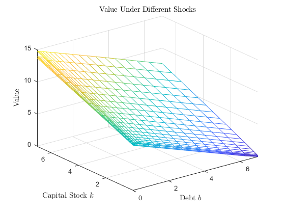
figure(2) mesh(bb, kk, kPolicy(:,:,1));% yesterday's productivity is mean for ia = 2:Na hold on; mesh(bb, kk, kPolicy(:,:,ia)); end title('Policy $k^\prime$ Under Different Shocks','interpreter','latex') ylabel('Capital Stock $k$','interpreter','latex') xlabel('Debt $b$','interpreter','latex') ylim([min(grid_k),max(grid_k)]) xlim([min(grid_b),max(grid_b)]) zlabel('$k^\prime$','interpreter','latex') savefig('q3a_kPolicy_3D')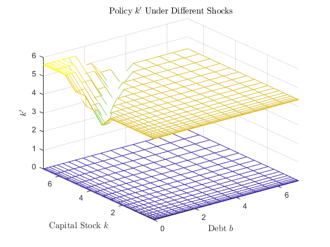
figure(3) mesh(bb, kk, bPolicy(:,:,1));% yesterday's productivity is mean for ia = 2:Na hold on; mesh(bb, kk, bPolicy(:,:,ia)); end title('Policy $b^\prime$ Under Different Shocks','interpreter','latex') ylabel('Capital Stock $k$','interpreter','latex') xlabel('Debt $b$','interpreter','latex') ylim([min(grid_k),max(grid_k)]) xlim([min(grid_b),max(grid_b)]) zlabel('$bond^\prime$','interpreter','latex') savefig('q3a_bPolicy_3D')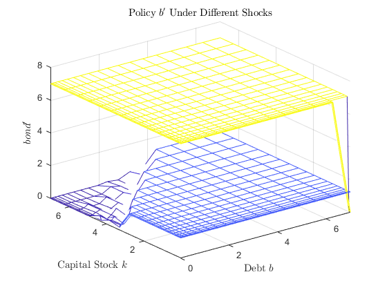
We plot the optimal investment and default decision for the equity holders.
mK3D=repmat(grid_k,1,Nb,Na);% Nk*Nb*Na matrix investmentPolicy = kPolicy - (1-ddelta) * mK3D; figure(4) mesh(bb, kk, investmentPolicy(:,:,1));% yesterday's productivity is mean for ia = 2:Na hold on; mesh(bb, kk, investmentPolicy(:,:,ia)); end title('Policy $investment^\prime$ Under Different Shocks','interpreter','latex') ylabel('Capital Stock $k$','interpreter','latex') xlabel('Debt $b$','interpreter','latex') zlabel('$investment^\prime$','interpreter','latex') ylim([min(grid_k),max(grid_k)]) xlim([min(grid_b),max(grid_b)]) savefig('q3a_investmentPolicy_3D')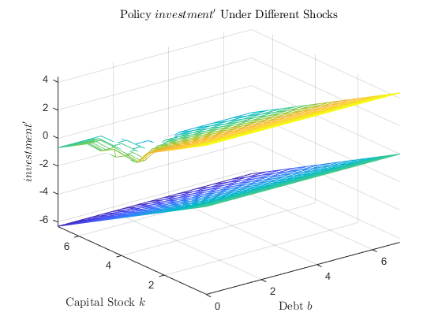
figure(5) mIsDefaultToday = (mValue<0); mesh(bb, kk, mIsDefaultToday(:,:,1));% yesterday's productivity is mean for ia = 2:Na hold on; mesh(bb, kk, mIsDefaultToday(:,:,ia)); end title('Whether to Default Today Under Different Shocks','interpreter','latex') ylabel('Capital Stock $k$','interpreter','latex') xlabel('Debt $b$','interpreter','latex') zlabel('default','interpreter','latex') ylim([min(grid_k),max(grid_k)]) xlim([min(grid_b),max(grid_b)]) savefig('q3a_IsDefaultToday_3D')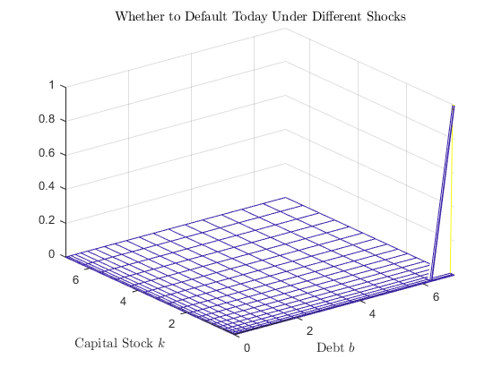
Compute the stationary distribution to see how good is the range of the grid
distributionStationary0 = (1/(Nk*Nb*Na))*ones(Nk,Nb,Na); distance=100; tolerance=0.0000000001; iteration=0; while distance>tolerance distributionStationary1 = zeros(Nk,Nb,Na); for ia=1:Na for ib=1:Nb for ik=1:Nk ikPrime = max(1,kPolicyIndex(ik,ib,ia)); ibPrime = max(1,bPolicyIndex(ik,ib,ia)); prob = distributionStationary0(ik,ib,ia); for iaPrime=1:Na prob_aPrime = prob*m_a_prob(ia,iaPrime); distributionStationary1(ikPrime,ibPrime,iaPrime) = distributionStationary1(ikPrime,ibPrime,iaPrime) + prob_aPrime; end end end end distance=sum(sum(sum(abs(distributionStationary0-distributionStationary1)))); distributionStationary0 = distributionStationary1; iteration = iteration + 1; end
We finally plot the distribution.
figure(6); [bb,kk]=meshgrid(grid_b, grid_k); mesh(bb, kk, distributionStationary0(:,:,1)); for ia = 2:Na hold on mesh(bb, kk, distributionStationary0(:,:,ia)); end title('Stationary Distribution','interpreter','latex'); ylabel('Capital Stock $k$','interpreter','latex') xlabel('Debt $b$','interpreter','latex') zlabel('Probability Mass','interpreter','latex') ylim([min(grid_k),max(grid_k)]) xlim([min(grid_b),max(grid_b)]) savefig('q3a_stationary_distribution_3D')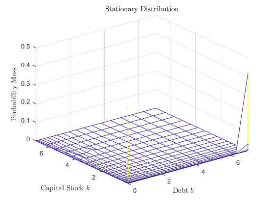
b) Probability of Default Next Period
We compute and plot the probability of default next period, conditional on the value of the shocks today p(z; b'; k')
mDefaultProbability = zeros(Nk,Nb,Na);% k',b',a for ibPrime = 1:Nb for ikPrime = 1:Nk for ia = 1:Na mDefaultProbability(ikPrime,ibPrime,ia) = sum(reshape((mValue(ikPrime,ibPrime,:)<0),1,Na).*m_a_prob(ia,:)); end end end figure(7) mesh(bb, kk, mDefaultProbability(:,:,1)); for ia = 2:Na hold on; mesh(bb, kk, mDefaultProbability(:,:,ia)); end title('Next Period Default Probability') ylabel('Next Period Capital Stock $k^\prime$','interpreter','latex') xlabel('Next Period Debt $b^\prime$','interpreter','latex') zlabel('Next Period Default Probability','interpreter','latex') zlim([0,1]) ylim([min(grid_k),max(grid_k)]) xlim([min(grid_b),max(grid_b)]) savefig('q3b_default_prob_3D')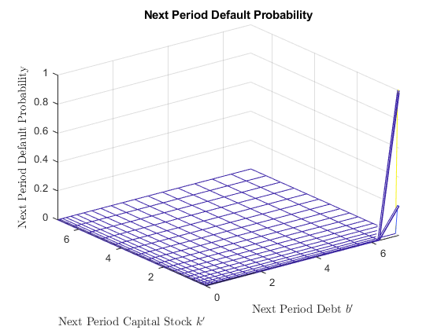
c) Required Rate of Return of Bonds
We now use the conditional default probability to compute the required rate of return by bondholders, Rb(b'; k'; z) that ensures they make 0 profits. We assume that bondholders get paid 0 upon default.
mRf = Rf*ones(Nk,Nb,Na);
mCarryOnProbability = 1-mDefaultProbability;
mIsDefaultNextPeriod3D = (mDefaultProbability==1); % (b'; k'; z)
mRb = Rf/mCarryOnProbability;
d) Value Function Iteration given Rb = mRb(k',b',z).
We solve the Bellman equation for the equity holders taking as given this new function for the required rate of return by bondholders, Rb().
Now we have to keep track of a-.
State variables: k,b,a,a-
Control variables: k',b'
% Required matrices and vectors % Dimensionality is k,b,a,aMinus kPolicyIndex = zeros(kGridLength(1),Nb,Na,Na); kPolicy = zeros(kGridLength(1),Nb,Na,Na); bPolicyIndex = zeros(kGridLength(1),Nb,Na,Na); bPolicy = zeros(kGridLength(1),Nb,Na,Na); % Note default it not a % policy to make for the next period. default is a reaction in this period % once productivity shock is realized and you see whether or not the value of the firm is larger than 0 or not. mValue = zeros(kGridLength(1),Nb,Na,Na); mValue0 = ones(kGridLength(1),Nb,Na,Na); % initial guess tic for i=1:length(kGridLength) grid_k = curvspace(kMin,kMax,kGridLength(i),2)'; % Since the profitFunction takes so much time, let's calculate it all % at once to retrieve later mANkByNa = repmat(grid_a',kGridLength(i),1); mKNkByNa = repmat(grid_k,1,Na); profitNkByNa = profitFunction(mANkByNa,mKNkByNa); % Nk by Na tolerance = 0.00001; iteration = 0; distance = 100; kPrimeNkByNb = repmat(grid_k,1,Nb); % Nk*Nb matrix bondPrimeNkByNb = repmat(grid_b',kGridLength(i),1); % Nk*Nb matrix tic while distance > tolerance % mIsDefaultNextPeriod is already computed. for ia=1:Na a = grid_a(ia); mIsDefaultNextPeriod2D = mIsDefaultNextPeriod3D(:,:,ia); % Nk*Nb matrix for ik=1:kGridLength(i) k = grid_k(ik); profit = profitNkByNa(ik,ia);% scalar investmentNkByNb = investmentFunction(k,kPrimeNkByNb); % Nk*Nb matrix for ib = 1:Nb bond = grid_b(ib); for iaMinus = 1:Na RbMinus = mRb(ik,ib,iaMinus); % scalar if mValue0(ik,ib,ia,iaMinus) <0 % the firm will exit/default and choose no k' and b' kPolicyIndex(ik,ib,ia,iaMinus) = 0; kPolicy(ik,ib,ia,iaMinus) = 0; bPolicyIndex(ik,ib,ia,iaMinus) = 0; bPolicy(ik,ib,ia,iaMinus) = 0; else % choose policy amongst k's b's taxPayments = taxPaymentsFunction(k,bond,profit,RbMinus); % scalar divident = dividentFunction(profit,investmentNkByNb,bond,bondPrimeNkByNb,RbMinus,taxPayments,mIsDefaultNextPeriod2D);% Nk*Nb matrix % Next we shall calculate the expected value % tomorrow. Note we have to apply Max operator % first and then take expectations - which means % only when we reach that period will the firm make % the default/nondefault decision. mValueTomorrow = zeros(kGridLength(i),Nb,Na); % k',b',a' for iaPrime = 1:Na % iterate over all possible states for tomorrow mValueTomorrow(:,:,iaPrime) = m_a_prob(ia,iaPrime) * ... (max(0,mValue0(:,:,iaPrime)).*(1-mIsDefaultNextPeriod2D)... + max(0,repmat(mValue0(:,1,iaPrime),1,Nb)).*mIsDefaultNextPeriod2D); end mExpectedValueTomorrow = sum(mValueTomorrow,3); % sum by the third dimension to get a Nk*Nb matrix x = divident + M * mExpectedValueTomorrow; [rows,cols]=find(x==max(max(x))); kPolicyIndex(ik,ib,ia,iaMinus) = min(rows); bPolicyIndex(ik,ib,ia,iaMinus) = min(cols); kPolicy(ik,ib,ia,iaMinus) = grid_k(min(rows)); bPolicy(ik,ib,ia,iaMinus) = grid_b(min(cols)); mValue(ik,ib,ia,iaMinus) = max(max(x)); end end end end end distance = sum(sum(sum(sum(abs(mValue(:,:,:,:)-mValue0(:,:,:,:)))))); mValue0 = mValue; iteration = iteration + 1; %if mod(iteration,5) == 0 % display("iteration = " + iteration + " difference = " + distance ) %end end display("iteration = " + iteration + " difference = " + distance + ". Converged") if i ~= length(kGridLength) mValue0 = interp1(grid_k, mValue,linspace(kMin, kMax, kGridLength(i+1))'); mValue = mValue0; kPolicy = zeros(kGridLength(i+1),Nb,Na,Na); kPolicyIndex = zeros(kGridLength(i+1),Nb,Na,Na); bPolicy = zeros(kGridLength(i+1),Nb,Na,Na); bPolicyIndex = zeros(kGridLength(i+1),Nb,Na,Na); end end toc save('resultD','mValue','kPolicy','bPolicy','kPolicyIndex','bPolicyIndex')
"iteration = 101 difference = 8.1365e-06. Converged" Elapsed time is 16.882517 seconds.
figure(8); [bb,kk]=meshgrid(grid_b, grid_k); mesh(bb, kk, mValue(:,:,1,round((Na+1)/2)));% yesterday's productivity is mean for ia = 2:Na hold on; mesh(bb, kk, mValue(:,:,ia,round((Na+1)/2))); end title('Value Under Different Shocks given mean $z^{-}$','interpreter','latex') ylabel('Capital Stock $k$','interpreter','latex') xlabel('Debt $b$','interpreter','latex') zlabel('Value','interpreter','latex') ylim([min(grid_k),max(grid_k)]) xlim([min(grid_b),max(grid_b)]) zlim([-max(max(max(max(mValue)))),max(max(max(max(mValue))))]) % legend('low productivity','median productivity','high productivity') % no use in mesh savefig('q3d_value_3D')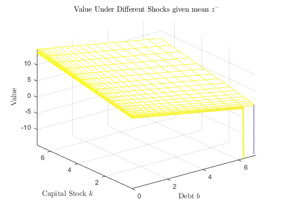
figure(9) mesh(bb, kk, kPolicy(:,:,1,round((Na+1)/2)));% yesterday's productivity is mean for ia = 2:Na hold on; mesh(bb, kk, kPolicy(:,:,ia,round((Na+1)/2))); end title('Policy $k^\prime$ Under Different Shocks given mean $z^{-}$','interpreter','latex') ylabel('Capital Stock $k$','interpreter','latex') xlabel('Debt $b$','interpreter','latex') zlabel('$k^\prime$','interpreter','latex') % legend('low productivity','median productivity','high productivity') % no use in mesh ylim([min(grid_k),max(grid_k)]) xlim([min(grid_b),max(grid_b)]) savefig('q3d_kPolicy_3D')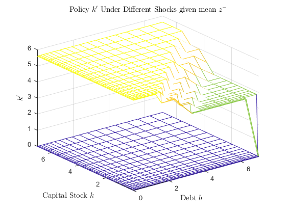
figure(10) mesh(bb, kk, bPolicy(:,:,1,round((Na+1)/2)));% yesterday's productivity is mean for ia = 2:Na hold on; mesh(bb, kk, bPolicy(:,:,ia,round((Na+1)/2))); end title('Policy $b^\prime$ Under Different Shocks given mean $z^{-}$','interpreter','latex') ylabel('Capital Stock $k$','interpreter','latex') xlabel('Debt $b$','interpreter','latex') zlabel('$bond^\prime$','interpreter','latex') ylim([min(grid_k),max(grid_k)]) xlim([min(grid_b),max(grid_b)]) savefig('q3d_bPolicy_3D')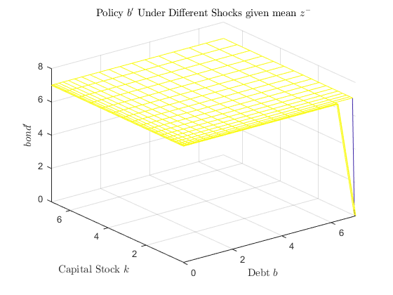
Compute the stationary distribution to see how good is the range of the grid
distributionStationary0 = (1/(Nk*Nb*Na*Na))*ones(Nk,Nb,Na,Na); distance=100; tolerance=0.0000000001; iteration=0; while distance>tolerance distributionStationary1 = zeros(Nk,Nb,Na,Na); for ia=1:Na for iaMinus=1:Na for ib=1:Nb for ik=1:Nk ikPrime = max(1,kPolicyIndex(ik,ib,ia,iaMinus)); ibPrime = max(1,bPolicyIndex(ik,ib,ia,iaMinus)); prob = distributionStationary0(ik,ib,ia,iaMinus); for iaPrime=1:Na prob_aPrime = prob*m_a_prob(ia,iaPrime); distributionStationary1(ikPrime,ibPrime,iaPrime,ia) = distributionStationary1(ikPrime,ibPrime,iaPrime,ia) + prob_aPrime; end end end end end distance=sum(sum(sum(sum(abs(distributionStationary0-distributionStationary1))))); distributionStationary0 = distributionStationary1; iteration = iteration + 1; end
Plot the distribution.
figure(11); [bb,kk]=meshgrid(grid_b, grid_k); mesh(bb, kk, distributionStationary0(:,:,1,1)); for iaMinus = 2:Na for ia = 2:Na hold on mesh(bb, kk, distributionStationary0(:,:,ia,iaMinus)); end end title('Stationary Distribution','interpreter','latex'); ylabel('Capital Stock $k$','interpreter','latex') xlabel('Debt $b$','interpreter','latex') zlabel('Probability Mass','interpreter','latex') ylim([min(grid_k),max(grid_k)]) xlim([min(grid_b),max(grid_b)]) savefig('q3d_stationary_distribution_3D')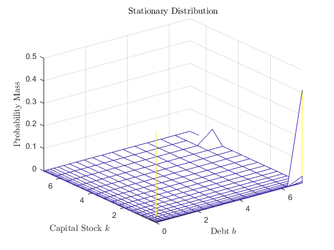
Plot this new value function against the one found in section a).
figure(12); [bb,kk]=meshgrid(grid_b, grid_k); load('resultA.mat') mesh(bb, kk, mValue(:,:,1)); for ia = 2:Na hold on; mesh(bb, kk, mValue(:,:,ia)); end title('Value Functions a)','interpreter','latex') ylabel('Capital Stock $k$','interpreter','latex') xlabel('Debt $b$','interpreter','latex') ylim([min(grid_k),max(grid_k)]) xlim([min(grid_b),max(grid_b)]) zlim([-max(max(max(max(mValue)))),max(max(max(max(mValue))))]) zlabel('Value','interpreter','latex') savefig('q3d_value_3D_resultA_and_resultD1') figure(13); load('resultD.mat') mesh(bb, kk, mValue(:,:,1)); for ia = 2:Na hold on; mesh(bb, kk, mValue(:,:,ia)); end title('Value Functions d)','interpreter','latex') ylabel('Capital Stock $k$','interpreter','latex') xlabel('Debt $b$','interpreter','latex') ylim([min(grid_k),max(grid_k)]) xlim([min(grid_b),max(grid_b)]) zlim([-max(max(max(max(mValue)))),max(max(max(max(mValue))))]) zlabel('Value','interpreter','latex') savefig('q3d_value_3D_resultA_and_resultD2')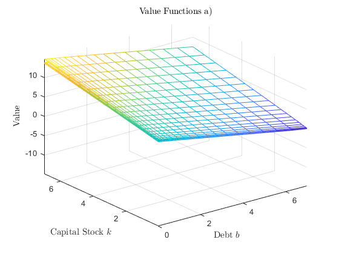 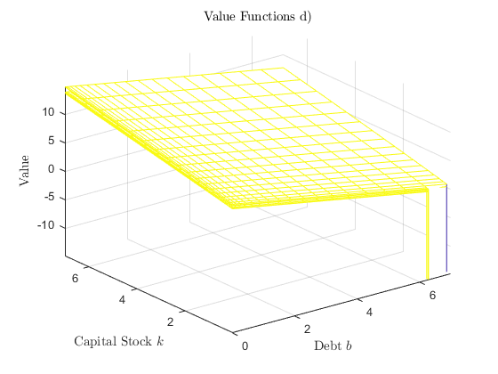
As we can see from the picture, the difference is only at the region where capital is extremely low and bond is extremely high.
This makes sense, because in a model where interest rate on risky bond does not depend on the default risk but is exogenously given, there will hardly be negative values because you won't pay very high interest rate even though your default probability is almost 1, or exactly one. That case, if you don't default, you just pay a relatively low interest rate and if you default because the value would be negative if you didn't, the supposed negative value cannot be too negative because the interest rate is just 1.01 times the riskfree rate.
On the other hand, in a model where interest rate on risky bond does depend on the default risk, once you ask for a very risky debt, the interest rate is so high that once there is a low productivity shock next period, you are more willing to default because if you chose not to, the value would be very very negative because you would have to pay a super high interest rate for the high risk debt you asked for last period.